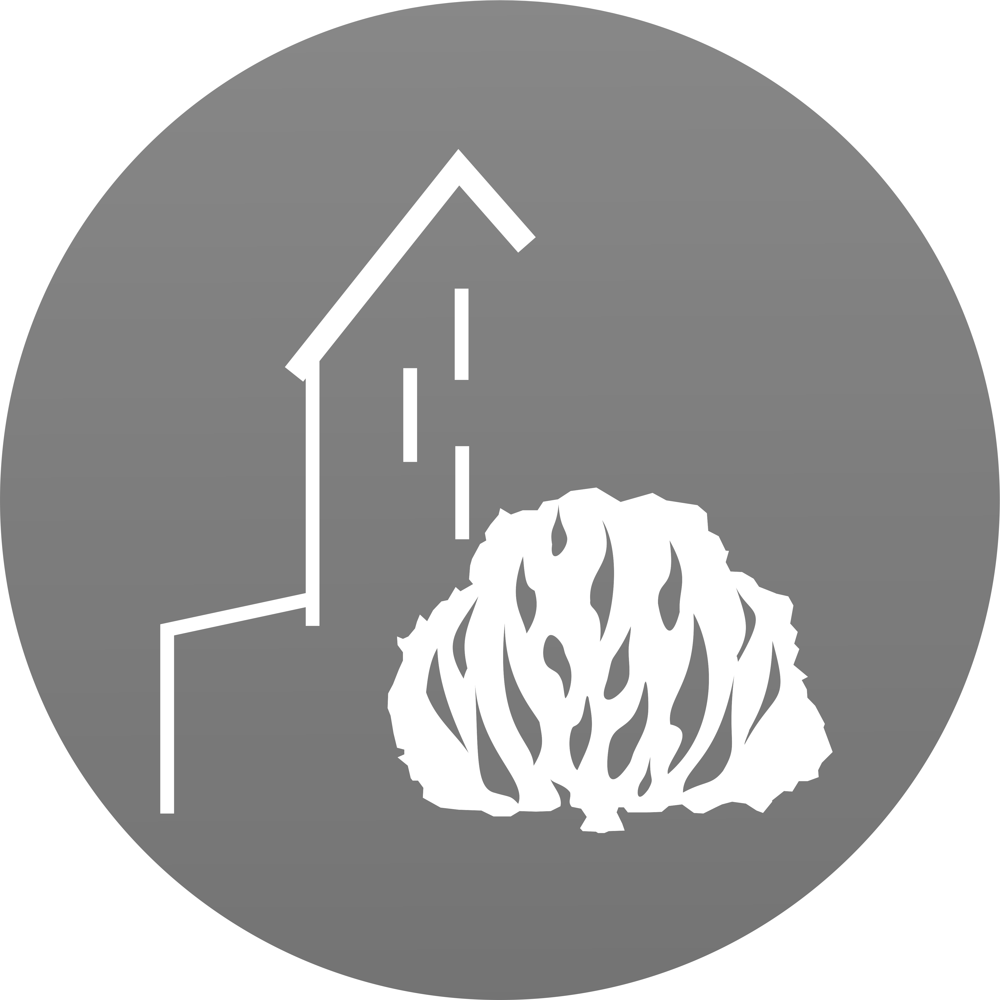

favoritar

procure pelo número, título ou letra do cântico.
filtro de palavras{{ keyword.name }}apagar
adicione um novo filtro com palavras chaves, títulos ou frases do cântico.
{{ cantico.numero + ' ∙ ' + cantico.titulo }}tamanho da fonteFavoritosFavoritos
{{ cantico.numero }}
{{ cantico.titulo }}
desfavoritar
ainda não foram adicionados cânticos aos favoritos